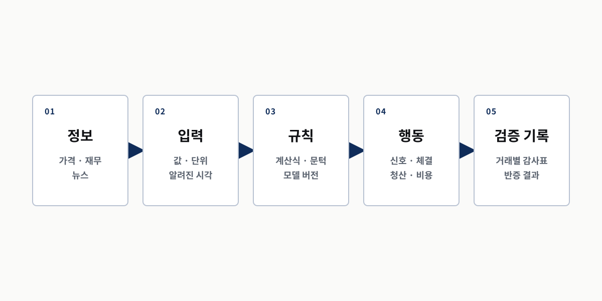
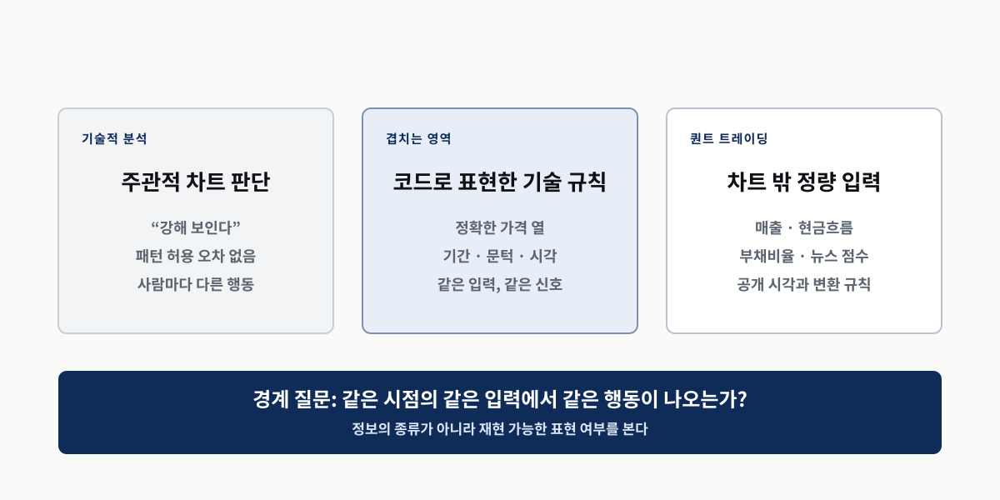
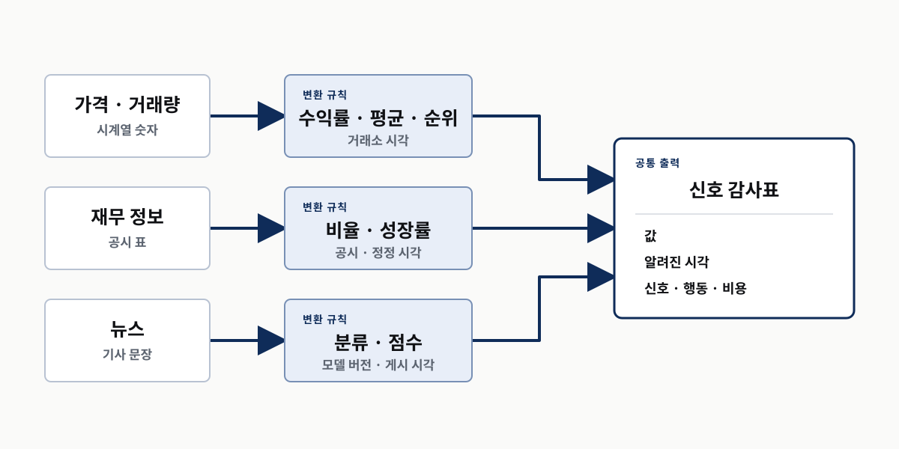

정보
무엇을 관찰하는가
퀀트 트레이딩의 정체
차트를 쓰느냐보다 판단을 재현할 수 있느냐가 경계다
같은 입력에서 같은 행동이 나오는가
그 과정을 다시 검사할 기록이 남는가
무엇을 관찰하는가
언제 알고 어떤 값으로 바꾸는가
어떤 조건이 신호를 만드는가
언제 무엇을 하는가
무엇을 다시 확인할 수 있는가
자동 주문 여부와 퀀트 연구 여부는 같은 축이 아니다
실행 축
판단 축
첫째
코드 파일보다 먼저 고정할 의사결정 사슬

이동평균 아이디어를 예로 든 최소 명세
| 칸 | 질문 | 예시 |
|---|---|---|
| 정보 | 무엇을 보나 | 종가 |
| 입력 | 언제 아나 | 장 마감 뒤 확정 |
| 규칙 | 무엇이 신호인가 | 단기 평균이 장기 평균보다 큼 |
| 행동 | 언제 거래하나 | 다음 거래일 시가 |
| 기록 | 무엇을 남기나 | 시각·가격·비용·손익 |
단기와 장기의 길이가 사람마다 다르다
장중 값과 장 마감 값이 섞인다
신호가 난 가격으로 바로 샀다고 착각한다
주문 전송보다 판단 계약이 먼저다
퀀트 연구가 성립
재현 연구가 아니다
둘째
정보의 종류만으로 퀀트 여부를 가를 수 없다
아직 사람의 감상
코드로 표현한 기술 규칙
기술적 분석 전체가 퀀트인 것도, 전부 퀀트 밖인 것도 아니다

같은 이동평균 아이디어의 네 상태
| 문장 | 현재 상태 | 다음 빈칸 |
|---|---|---|
| 차트가 강해 보이면 산다 | 감상 | 강함의 값과 문턱 |
| 단기 평균이 장기 평균을 넘으면 산다 | 부분 명세 | 기간·시각 |
| 장 마감 신호 뒤 다음 시가에 산다 | 실행 규칙 | 비용·청산 |
| 거래별 감사표와 대조 결과를 남긴다 | 감사 가능한 연구 | 표본 밖 검증 |
무엇을 시험할지 말한다
같은 신호를 다시 만든다
코드가 결과를 낸다
편향과 비용으로 반증한다
표현 가능성은 시험의 입장권이다
셋째
이름표 대신 현재 명세 수준을 판정한다
| 투자 문장 | 이미 있는 것 | 비어 있는 것 |
|---|---|---|
| 실적이 좋은 회사를 산다 | 재무 정보의 방향 | 지표·공개 시각·비교 집단 |
| 매출 증가율 상위 종목을 산다 | 지표와 순위 | 기간·공개 지연·매수 시각 |
| 나쁜 뉴스가 나오면 판다 | 뉴스와 행동 | 판정기·버전·문턱·시각 |
| 어제 값으로 신호를 만들고 오늘 시가에 거래한다 | 정보·신호·체결 시각 | 비용·청산·대조군 |
| 입력을 묻는다 | 행동과 검증을 묻는다 |
|---|---|
| 무엇을 보나 | 언제 행동하나 |
| 언제 알았나 | 무엇을 비용으로 빼나 |
| 어떻게 숫자로 바꾸나 | 무엇이면 틀렸다고 하나 |
숫자 하나만 남기면 당시 알 수 있었는지가 사라진다
| 값 | 알려진 시각 | 신호 시각 | 판정 |
|---|---|---|---|
| 어제 종가 | 어제 장 마감 | 오늘 장 시작 전 | 사용 가능 |
| 오늘 종가 | 오늘 장 마감 | 오늘 장 시작 전 | 미래 정보 |
| 공시 수치 | 공시 게시 뒤 | 게시 전 | 미래 정보 |
| 뉴스 점수 | 기사 게시 뒤 | 게시 뒤 | 사용 가능 |
처음부터 빈칸이 있는 것은 정상이다
시작할 때
무엇을 보고 어떻게 행동하고 싶은지 적는다 ;; 모르는 조건은 빈칸으로 둔다
끝날 때
다음 조사와 테스트를 정한다 ;; 알고리즘이라는 이름으로 빈칸을 숨기지 않는다
넷째
각 정보는 공개 시각과 변환 규칙을 거쳐 같은 신호 표가 된다

최종 숫자 옆에 붙여야 할 변환 계약
| 정보 | 컴퓨터 입력 | 반드시 붙일 조건 |
|---|---|---|
| 가격·거래량 | 수익률·평균·순위 | 거래소 시각·수정 방식·결측치 |
| 재무 정보 | 비율·성장률·동종 비교 | 공시 시각·정정·사용 가능일 |
| 뉴스 | 분류·점수·사건 표식 | 게시 시각·모델 버전·문턱 |
모델과 지시문이 바뀌면 과거 점수도 달라진다
정정된 최신 값을 과거 전체에 덮으면 미래가 섞인다
수정주가와 결측치 처리가 바뀌면 신호도 바뀐다
컴퓨터와 사람의 역할을 섞지 않는다
| 주체 | 잘하는 일 | 남겨야 할 것 |
|---|---|---|
| 컴퓨터 | 같은 규칙을 여러 대상과 시점에 반복 | 입력·출력·실행 기록 |
| 사람 | 빠진 가정과 대조군을 질문 | 선택 이유·문턱·실패 조건 |
| 코딩 에이전트 | 명세를 코드와 테스트로 옮김 | 요청·버전·검증 결과 |
표준 작업 화면은 로컬 저장소에서 실행하는 코덱스 명령줄 도구다
에이전트에 맡긴다
연구자가 책임진다
다섯째
자연스러운 설명보다 산출물을 본다
증거로 본다
제안으로만 본다
한 층을 통과해도 다음 층은 남아 있다
| 층 | 통과했다는 뜻 | 아직 증명하지 못한 것 |
|---|---|---|
| 코드 실행 | 프로그램이 결과를 냈다 | 계산이 의도와 같은가 |
| 규칙 재현 | 같은 입력에서 같은 행동이 나왔다 | 미래 정보와 선택 편향이 없는가 |
| 검증 통과 | 정한 대조와 표본 밖 절차를 통과했다 | 앞으로도 수익이 난다는 보장 |
투자 아이디어를 한 줄로 적는다
여섯 질문으로 빠진 계약을 표시한다
고정된 조건만 코드로 옮긴다
감사표와 반증 결과로 다시 판단한다
이름표를 붙이지 말고 빠진 칸을 표시한다
| 칸 | 현재 답 | 판정 |
|---|---|---|
| 정보 | 가격과 거래량으로 보임 | 열이 불명확 |
| 규칙 | 강해 보임 | 값과 문턱이 없음 |
| 행동 | 산다 | 신호·체결 시각이 없음 |
| 검증 | 없음 | 아직 아이디어 |
숫자가 있어도 정보 시각과 행동은 따로 적는다
| 칸 | 현재 답 | 판정 |
|---|---|---|
| 정보 | 매출 증가율 | 계산 기간 필요 |
| 입력 | 상위 종목 | 비교 집단·공시 지연 필요 |
| 행동 | 산다 | 매수 시각·가격 필요 |
| 검증 | 없음 | 부분 명세 |
문장을 숫자로 바꾸는 규칙 자체가 감사 대상이다
| 칸 | 현재 답 | 판정 |
|---|---|---|
| 정보 | 뉴스 문장 | 게시 시각 필요 |
| 입력 | 나쁨 | 모델·버전·문턱 필요 |
| 행동 | 판다 | 체결 시각·가격 필요 |
| 검증 | 없음 | 아직 아이디어 |
코덱스에 보내는 첫 요청부터 판정 계약을 넣는다
약한 요청
감사 가능한 요청
수익률보다 먼저 열어 볼 두 묶음
계약이 보인다
계약이 숨었다
정리
그 행동을 다시 검사할 기록을 남긴다